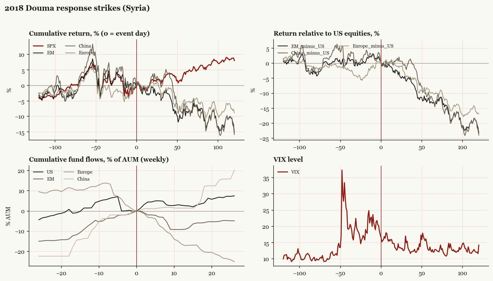

2018 Douma response strikes (Syria)
Trump1 administration. Outbreak/event 2018-04-14, buildup from 2018-04-07. Telegraphed; type: one_off.

What moved
- Equities ran -4.4% over the 60 trading days into the event.
- The S&P 500 moved +3.5% over the following 60 trading days and +8.0% over 120.
- Cumulative net flows into US equity funds: +2.6% of assets in the 13 weeks after (vs -1.5% in the 13 weeks before).
- Cumulative net flows into emerging-market funds: -9.0% of assets in the 13 weeks after (vs +7.5% in the 13 weeks before).
- Cumulative net flows into Europe funds: -17.2% of assets in the 13 weeks after (vs -11.4% in the 13 weeks before).
- Cumulative net flows into China funds: +1.4% of assets in the 13 weeks after (vs +13.6% in the 13 weeks before).
- Implied volatility moved -2.2 VIX points across the event (from 17.4).
- Week of public deliberation
Detail
| series |
runup pre-60d |
+20d |
+60d |
+120d |
| SPX |
-4.4% |
+1.9% |
+3.5% |
+8.0% |
| US |
-4.4% |
+2.1% |
+3.5% |
+8.0% |
| EM |
-4.6% |
-0.5% |
-9.8% |
-15.1% |
| China |
-7.8% |
+3.8% |
-8.5% |
-15.9% |
| Taiwan |
-0.5% |
-1.5% |
-6.6% |
-5.7% |
| Europe |
-3.8% |
+1.0% |
-6.4% |
-8.9% |
| Japan |
-4.9% |
+2.0% |
-5.8% |
-2.1% |
| Bonds |
-1.7% |
-1.4% |
+0.2% |
-3.5% |
| Gold |
+1.4% |
-2.5% |
-8.3% |
-11.8% |